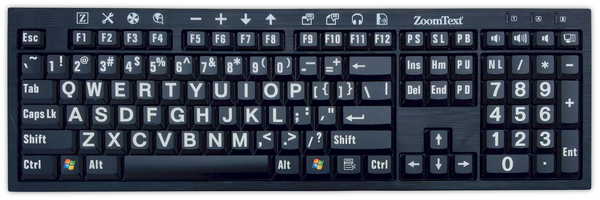

Parts of a Computer

Keyboard
A computer keyboard is a typewriter-style device[1] which uses an arrangement of buttons or keys to act as mechanical levers or electronic switches. Following the decline of punch cards and paper tape, interaction via teleprinter-style keyboards became the main input method for computers.
Keyboard keys (buttons) typically have characters engraved or printed on them,[2] and each press of a key typically corresponds to a single written symbol. However, producing some symbols may require pressing and holding several keys simultaneously or in sequence.[3] While most keyboard keys produce letters, numbers or signs (characters), other keys or simultaneous key presses can produce actions or execute computer commands.
In normal usage, the keyboard is used as a text entry interface for typing text and numbers into a word processor, text editor or any other program. In a modern computer, the interpretation of key presses is generally left to the software. A computer keyboard distinguishes each physical key from every other key and reports all key presses to the controlling software. Keyboards are also used for computer gaming — either regular keyboards or keyboards with special gaming features, which can expedite frequently used keystroke combinations.
A keyboard is also used to give commands to the operating system of a computer, such as Windows' Control-Alt-Delete combination. Although on Pre-Windows 95 Microsoft operating systems this forced a re-boot, now it brings up a system security options screen.[4][5]
A command-line interface is a type of user interface navigated entirely using a keyboard, or some other similar device that does the job of one.

Mouse
A computer mouse is a hand-held pointing device that detects two-dimensional motion relative to a surface. This motion is typically translated into the motion of a pointer on a display, which allows a smooth control of the graphical user interface. The first public demonstration of a mouse controlling a computer system was in 1968. Originally wired to a computer, many modern mice are cordless, relying on short-range radio communication with the connected system. Mice originally used a ball rolling on a surface to detect motion, but modern mice often have optical sensors that have no moving parts. In addition to moving a cursor, computer mice have one or more buttons to allow operations such as selection of a menu item on a display. Mice often also feature other elements, such as touch surfaces and "wheels", which enable additional control and dimensional input.

Monitor
A computer monitor is an output device that displays information in pictorial form. A monitor usually comprises the display device, circuitry, casing, and power supply. The display device in modern monitors is typically a thin film transistor liquid crystal display(TFT-LCD) with LED backlighting having replaced cold-cathode fluorescent lamp (CCFL) backlighting. Older monitors used a cathode ray tube (CRT). Monitors are connected to the computer via VGA, Digital Visual Interface (DVI), HDMI, DisplayPort, Thunderbolt, low-voltage differential signaling (LVDS) or other proprietary connectors and signals.
Originally, computer monitors were used for data processing while television receivers were used for entertainment. From the 1980s onwards, computers (and their monitors) have been used for both data processing and entertainment, while televisions have implemented some computer functionality. The common aspect ratio of televisions, and computer monitors, has changed from 4:3 to 16:10, to 16:9.
Modern computer monitors are easily interchangeable with conventional television sets. However, as computer monitors do not necessarily include components such as a television tuner and speakers, it may not be possible to use a computer monitor as a television without external components.

Speaker
Computer speakers, or multimedia speakers, are speakers sold for use with computers, although usually capable of other audio uses, e.g. for an MP3 player. Most such speakers have an internal amplifier and consequently require a power source, which may be by a mains power supply often via an AC adapter, batteries, or a USB port (able to supply no more than 2.5W DC, 500mA at 5V). The signal input connector is often a 3.5 mm jack plug (usually color-coded lime green per the PC 99 standard); RCA connectorsare sometimes used, and a USB port may supply both signal and power (requiring additional circuitry, and only suitable for use with a computer). Battery-powered wireless Bluetooth speakers require no connections at all. Most computers have speakers of low power and quality built in; when external speakers are connected they disable the built-in speakers. Altec Lansing claims to have created the computer speaker market in 1990.[1]
Computer speakers range widely in quality and in price. Computer speakers sometimes packaged with computer systems are small, plastic, and have mediocre sound quality. Some computer speakers have equalization features such as bass and treble controls.
More sophisticated computer speakers can have a subwoofer unit, to enhance bass output. The larger subwoofer enclosure usually contains the amplifiers for the subwoofer and the left and right speakers.
Some computer displays have rather basic speakers built-in. Laptop computers have built-in integrated speakers, usually small and of restricted sound quality to conserve space.
Instead of using a computer speaker for better sound, a computer can be connected to any external sound system, typically a high-power high-quality setup.

Microphone
A microphone is a hardwareperipheral and input device originally invented by Emile Berliner in 1877. A microphone allows computer users to input audio into their computers. The picture is an example of Blue Microphone's Yeti USB microphone - Silver Edition and an example of a high-quality computer microphone.

Motherboard
A motherboard (sometimes alternatively known as the main circuit board, system board, baseboard, planar board or logic board,[1] or colloquially, a mobo) is the main printed circuit board (PCB) found in general purpose microcomputers and other expandable systems. It holds and allows communication between many of the crucial electronic components of a system, such as the central processing unit (CPU) and memory, and provides connectors for other peripherals. Unlike a backplane, a motherboard usually contains significant sub-systems such as the central processor, the chipset's input/output and memory controllers, interface connectors, and other components integrated for general purpose use and applications.
Motherboard specifically refers to a PCB with expansion capability and as the name suggests, this board is often referred to as the "mother" of all components attached to it, which often include peripherals, interface cards, and daughtercards: sound cards, video cards, network cards, hard drives, or other forms of persistent storage; TV tuner cards, cards providing extra USB or FireWire slots and a variety of other custom components.
Similarly, the term mainboard is applied to devices with a single board and no additional expansions or capability, such as controlling boards in laser printers, televisions, washing machines and other embedded systems with limited expansion abilities.

Headset
A headset combines a headphone with a microphone. Headsets are made with either a single-earpiece (mono) or a double-earpiece (mono to both ears or stereo). Headsets provide the equivalent functionality of a telephone handset but with handsfree operation.[1] They have many uses including in call centers and other telephone-intensive jobs and for anybody wishing to have both hands free during a telephone conversation.

Power Supply
A power supply unit (or PSU) converts mains AC to low-voltage regulated DC power for the internal components of a computer. Modern personal computers universally use switched-mode power supplies. Some power supplies have a manual switch for selecting input voltage, while others automatically adapt to the mains voltage.
Most modern desktop personal computer power supplies conform to the ATX specification, which includes form factor and voltage tolerances. While an ATX power supply is connected to the mains supply, it always provides a 5 Volt standby (5VSB) voltage so that the standby functions on the computer and certain peripherals are powered. ATX power supplies are turned on and off by a signal from the motherboard. They also provide a signal to the motherboard to indicate when the DC voltages are in spec, so that the computer is able to safely power up and boot. The most recent ATX PSU standard is version 2.31 as of mid-2008.

HDD / Hard Drive Disk
A hard disk drive (HDD), hard disk, hard drive, or fixed disk,[b] is an electromechanical data storage device that uses magnetic storage to store and retrieve digital information using one or more rigid rapidly rotating disks (platters) coated with magnetic material. The platters are paired with magnetic heads, usually arranged on a moving actuator arm, which read and write data to the platter surfaces.[2] Data is accessed in a random-access manner, meaning that individual blocks of data can be stored or retrieved in any order and not only sequentially. HDDs are a type of non-volatile storage, retaining stored data even when powered off.[3][4][5]
Introduced by IBM in 1956,[6] HDDs became the dominant secondary storage device for general-purpose computers by the early 1960s. Continuously improved, HDDs have maintained this position into the modern era of servers and personal computers. More than 200 companies have produced HDDs historically, though after extensive industry consolidation most units are manufactured by Seagate, Toshiba, and Western Digital. HDDs dominate the volume of storage produced (exabytes per year) for servers. Though production is growing slowly, sales revenues and unit shipments are declining because solid-state drives (SSDs) have higher data-transfer rates, higher areal storage density, better reliability,[7] and much lower latency and access times.[8][9][10][11]
The revenues for SSDs, most of which use NAND, slightly exceed those for HDDs.[12] Though SSDs have nearly 10 times higher cost per bit, they are replacing HDDs where speed, power consumption, small size, and durability are important.[10][11]
The primary characteristics of an HDD are its capacity and performance. Capacity is specified in unit prefixes corresponding to powers of 1000: a 1-terabyte (TB) drive has a capacity of 1,000 gigabytes (GB; where 1 gigabyte = 1 billion bytes). Typically, some of an HDD's capacity is unavailable to the user because it is used by the file system and the computer operating system, and possibly inbuilt redundancy for error correction and recovery. Performance is specified by the time required to move the heads to a track or cylinder (average access time) plus the time it takes for the desired sector to move under the head (average latency, which is a function of the physical rotational speed in revolutions per minute), and finally the speed at which the data is transmitted (data rate).
The two most common form factors for modern HDDs are 3.5-inch, for desktop computers, and 2.5-inch, primarily for laptops. HDDs are connected to systems by standard interface cables such as PATA (Parallel ATA), SATA (Serial ATA), USB or SAS (Serial Attached SCSI) cables.

Video Card
A video card (also called a display card, graphics card, display adapter or graphics adapter) is an expansion card which generates a feed of output images to a display (such as a computer monitor). Frequently, these are advertised as discrete or dedicated graphics cards, emphasizing the distinction between these and integrated graphics. At the core of both is the graphics processing unit (GPU), which is the main part that does the actual computations, but should not be confused as the video card as a whole, although "GPU" is often used to refer to video cards.
Most video cards are not limited to simple display output. Their integrated graphics processor can perform additional processing, removing this task from the central processor of the computer.[1] For example, Nvidia and AMD (ATi) produced cards render the graphics pipeline OpenGL and DirectX on the hardware level.[2] In the later 2010s, there has also been a tendency to use the computing capabilities of the graphics processor to solve non-graphic tasks.[3]
Usually the graphics card is made in the form of a printed circuit board (expansion board) and inserted into an expansion slot, universal or specialized (AGP, PCI Express).[4] Some have been made using dedicated enclosures, which are connected to the computer via a docking station or a cable.